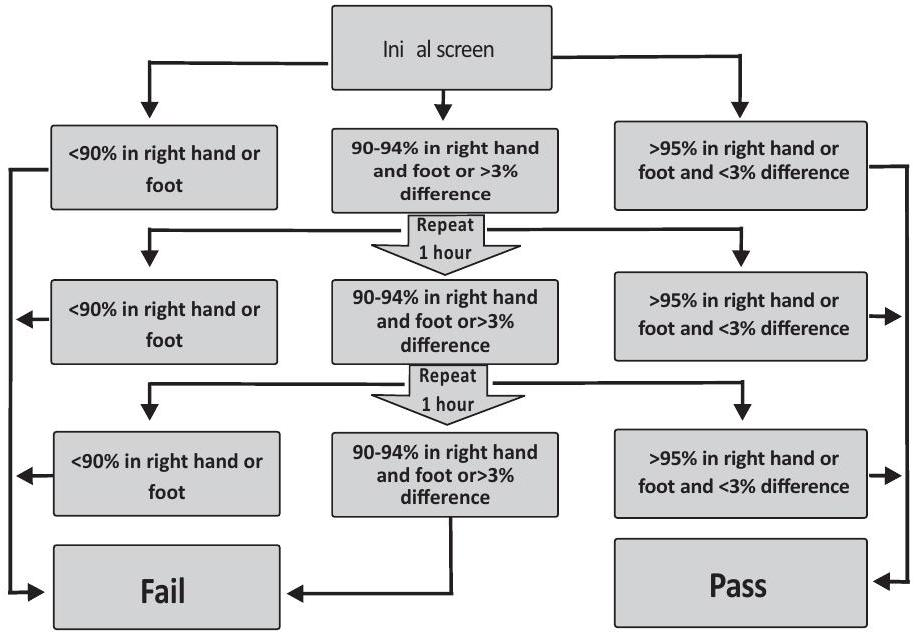

Management of Common Conditions (Part 2)
23.0 RESPIRATORY DISTRESS
Definition: Tachypnoea >60 breaths/min, grunting, chest retraction with or without cyanosis
Causes of respiratory distress
- Pulmonary
- Respiratory distress syndrome (RDS) (surfactant deficiency)
- Pneumonia
- Aspiration syndromes (meconium, feeds)
- Pulmonary haemorrhage,
- Airway
- Laryngomalacia,
- Choanal atresia.
- Micrognathia
- CNS
- Seizures,
- Birth asphyxia,
- Intracranial haemorrhage
- Metabolic:
- Hypoglycaemia,
- Electrolyte derangements
- Temperature instability
- Congenital heart diseases especially those with cardiac failure
23.1 MANAGEMENT
Take history & do thorough examination to identify the cause of distress
Assess the severity of the distress using the Silverman-Anderson score
Investigations:
For all babies
- Chest X-ray
- Full blood count including a manual PBF
- CRP
- Blood gas analysis
- Blood sugar
Specific investigation according to suspected cause
23.2 SPECIFIC TREATMENT
Treat the underlying cause
Start antibiotics
Start IV fluids
23.4 Silverman Anderson Score and its interpretation
| Score | Upper chest retraction | Lower chest retraction | Xiphoid retraction | Nasal flaring | Expiratory Grunt |
|---|---|---|---|---|---|
| 0 | Synchronised | None | None | None | None |
| 1 | Lag during inspiration | Just visible | Just visible | Minimal | Audible with Stethoscope |
| 2 | See - Saw | Marked | Marked | Marked | Audible without Stethoscope |

Interpretation
Score 1-3 = Mild respiratory distress - $\mathrm{O}_{2}$ by nasal prongs
Score 4-6 = Moderate respiratory distress - CPAP
Score>6 = Impending respiratory failure -mechanical ventilation
NB. This scoring has to be modified/interpreted with caution once the baby is on CPAP as the grunting and the nasal flaring are abolished.
23.5 MANAGEMENT
Mild breathing difficulty (Score 1-3)
- Monitor for respiratory distress using the Silverman-Anderson score
- Monitor oxygen saturation.
- Give expressed breast milk by gastric tube as soon as possible
- When oxygen is no longer needed, allow the baby to begin breastfeeding. If the baby cannot be breastfed, continue giving expressed breast milk by tube or cup
- If the breathing difficulty worsens at any time during the observation period: treat for moderate breathing difficulty or severe.
- Most babies with mild and transient respiratory distress do not need antibiotics.
- But, if there are risk factors, start antibiotics after taking a sepsis screen. Review after 48-72 hrs: if respiratory distress has settled-STOP ANTIBIOTICS
Moderate to Severe breathing difficulty (Score 4-6)
(see Continuous Positive Airway Pressure (CPAP) chart next page)
Continuous Positive Airway Pressure (CPAP)
(For maximum benefit start as soon as symptoms are identified)
SURFACTANT THERAPY
As a general principle initially provide nCPAP to all patients with RDS. Intubate and administer surfactant to those with persistent severe respiratory distress (defined as requiring a fraction of inspired oxygen $\left[\mathrm{FiO}_{2}\right]$ of 0.40 or higher to maintain oxygen saturation above $90\%$ ) or who are apneic.
INDICATIONS
Prophylactic surfactant therapy (within 2 hr . of birth)
- Gestation <28 weeks/birth weight <1250gm
Early rescue treatment (within 12 hrs of birth)
- All other babies with evidence of RDS who require CPAP or ventilation and needing $\mathrm{FiO}_{2}>0.4$
Other babies that can be considered for surfactant therapy (after senior discussion)
- Ventilated babies with meconium aspiration syndrome who require $\mathrm{FIO}_{2}>0.5$
- Term babies with pneumonia and stiff lungs
- Sepsis with hypoxic failure
PROCEDURE
Prepare
- Sterile gloves
- End open hole tube size 5F (can use nasogastric tube)
- Prepare surfactant according to manufacturer's instruction
- Calculate dose of surfactant required
- Draw up required dose and warm to room temperature.
- Remaining surfactant should be placed back in the fridge to be used for next dose.
Intubate baby and:
- Ensure correct endotracheal tube (ETT) position
- Check ETT length at lips/nose
- Listen for bilateral air entry and look for chest movement
Instillation
- With baby supine, instill prescribed dose down tracheal tube in 2 to 4 boluses
- Wait for recovery of air entry/chest movement and oxygenation between boluses
Post-instillation care
- Do not suction ETT for 8 hr .
- Adjust ventilator/oxygen settings in response to changes in chest movement, tidal volume and oxygen saturation
- Do a blood gas within 30 min
Additional information
- Non-intubated babies can be given surfactant while on CPAP
- Use the same dose & size tube
- If needed 4 repeat doses of surfactant can be give at 12 hrly intervals within the $1^{\text {st }} 48 \mathrm{hrs}$
COMPLICATIONS
Physiologic:
- Apnea
- Mucus plugs
- Barotrauma resulting from increase in lung compliance following surfactant replacement and failure to change ventilator settings accordingly
Procedural:
- Plugging of ETT by surfactant
- Hemoglobin desaturation and increased need for supplemental oxygen
- Bradycardia due to hypoxia
- Tachycardia due to agitation with reflux of surfactant into the ETT
- Pharyngeal deposition of surfactant
- Administration of surfactant to only one lung
- Administration of suboptimal dose secondary to miscalculation
ADDITIONAL CARE (for babies on CPAP)
Insert an orogastric tube for stomach decompression and feeding. (Leave the tube open to allow gas to escape)
- After taking a sepsis screen including blood culture start antibiotics.
- Initiate enteral feeding by day 2-3:
- Give expressed breast milk by orogastric tube
- If baby not tolerating full feed give trophic feeds
- When oxygen is no longer needed, allow the baby to begin breastfeeding.
- If the baby cannot breastfed, give expressed breast milk using a cup or tube
Observation & / Documentation:
Baby
- Hourly temperature, heart rate, respiratory rate, $\mathrm{SpO}_{2}$
- Prongs - check patency every 1-2 hrs
- Document any changes in the infant's condition infant, position & comfort
- Abdominal distension
- Thermal environment
- Medications
- Feed/Fluid balance
- Procedures and investigations
- Parental interaction
Equipment Hourly
- $\mathrm{FIO}_{2}$
- CPAP settings & adjust as needed
- Gas flow rate
- Water level in humidifying chamber
- Humidifier and circuit temperature
- Activity of bubbles in Bubble CPAP system.
Weaning baby from CPAP
As the score reduces/baby improves gradually reduce $\mathrm{FIO}_{2}$ by 5%.
When $\mathrm{FIO}_{2}$ is <30% discontinue CPAP to nasal prongs.
Continue monitoring RDS Score to ensure baby does not require re-introduction of CPAP
Continue monitoring $\mathrm{O}_{2}$ saturations till baby no longer needs $\mathrm{O}_{2}$
IMPENDING RESPIRATORY FAILURE-MECHANICAL VENTILATION
Indication for mechanical ventilation: Silverman-Anderson score $\geq 6$ OR some of the following clinical or laboratory findings
Clinical
- Central cyanosis
- Intractable apnoea
- Decreased activity and movement
Laboratory criteria
- $\mathrm{PaCO}_{2}>8 \mathrm{kPa}$ (>60 mmHg)
- $\mathrm{PaO}_{2}<5.5 \mathrm{kPa}$ (<50 mmHg) or $\mathrm{O}_{2}$ saturation of <80% while on 100% oxygen
- $\mathrm{pH}<7.25$
Premedication for elective intubation
- Pre-oxygenate for 3-5 minutes
- Morphine: $0.1-0.2 \mathrm{mg} / \mathrm{kg}$ IV but can be IM or SC
- Midazolam can be used as alternative to morphine at a dose of $0.1-0.2 \mathrm{mg} / \mathrm{kg}$
Connecting Patient to the ventilator
- Intubate and secure ET
- Position $1-2 \mathrm{~cm}$ above carina/T2 (Sizes of tubes & length in see table)
- Give surfactant if indicated
- Initial ventilator setting
- RR $40-60 / \mathrm{min}$ to enable synchrony and ease of ventilation
- Initial PIP $14-18 \mathrm{cmH}_{2} \mathrm{O}$. Start low and increase by 2 cm if needed
- PEEP $4-5 \mathrm{~cm}$ of water maximum of 8
- $\mathrm{FIO}_{2} 0.4$ increase by 5% every 1 min until oxygen saturation level is 90-95%
- Ti 0.32-0.5 seconds. Ensure I:E ratio of 1:2 unless otherwise indicated by blood gases ( arterial)
- Vt $4-6 \mathrm{ml} / \mathrm{kg}$. Start low and increase as needed
| Weight (g) | ET tube diameter (mm) | Length in oral route (cm) |
|---|---|---|
| <1000 | 2.5 | $5.5-6.5$ |
| $1000-2000$ | 3.0 | $7.0-7.5$ |
| $2000-3500$ | $3.0-3.5$ | $7.5-8.0$ |
| >3500 | $3.5-4$ | $8.5-9.0$ |
Confirm position by X-ray as soon as possible: Position $1-2 \mathrm{~cm}$ above carina/T2
Monitoring Ventilation
- Colour
- Capillary refill time (hydration status)
- Breath sounds
- Chest movement / tidal volume $4-6 \mathrm{ml} / \mathrm{Kg}$
- Transcutaneous monitors $\mathrm{CO}_{2}$
- Oxygen Saturations
- Arterial blood gas analysis
Minimise movement to avoid displacement of the tube
Sudden deterioration of an intubated baby (DOPES)
- Displacement of the tube
- Obstruction of ET tube
- Pneumothorax
- Equipment failure
- Stomach distension
Identify and rectify the problem urgently
Targets for ventilation
- pH >7.25
- $\mathrm{PaCO}_{2} 5-7.5 \mathrm{kPa}$ (40-50 mmHg)
- $\mathrm{Pa} \mathrm{O}_{2} 6-10 \mathrm{kPa}$ (40-80 mmHg)
- Saturations 90%-95%
Failure to respond to ventilator manipulation may be due to:
- Mechanical problems - check for leaks, blocked tube
- Metabolic disorders - glucose, uncorrected acid/base balance, electrolytes
- Blood pressure hypo or hypertension
- Low Hb
- Cardiac complications - PDA, persistent pulmonary hypertension
- Lung complications - oedema, haemorrhage, BPD
- Intracranial bleeds
- Sepsis
Weaning from ventilation - one ventilator setting at a time
When stable for 24 hours:
- Start with $\mathrm{O}_{2}$ decrease by $5-10 \%$ to levels < 40%
- Then reduce PIP by $1-2 \mathrm{~cm}$ to a level of $8-10 \mathrm{~cm} / \mathrm{H}_{2} \mathrm{O}$
- Then reduce respiratory rate by $1-5$ breaths/min till rate is 15-20breaths/min
- Frequent BGAs (every 6 hours) Maintain $\mathrm{PaO}_{2}$ & $\mathrm{PaCO}_{2}$ & saturations within targets for ventilation
- Extubate when above levels attained and the blood gas done 2-4 hours later remains acceptable. Repeat a blood gas 4 hours after extubation (earlier if baby shows signs of deterioration).
EXTUBATION
Preferably extubate onto CPAP
- $\mathrm{FIO}_{2}<40 \% \mathrm{O}_{2}$
- Stop feeds for 4 hours or empty stomach with NG tube
- No feed for 4 to 6 hours post extubation
- Load with caffeine citrate (or use aminophylline if caffeine is not available) to reduce apnoea at least 4 hours prior to extubation.
- After 2 failed trials of extubation give dexamethasone 48 hours before and 24 hours after $0.25 \mathrm{mg} / \mathrm{kg}$ bd to reduce inflammation. Dexamethasone is also indicated for extubation of baby who has been intubated for > 5 days to reduce risk of failure ( 3 doses given 8 hrly at $0.25 \mathrm{mg} / \mathrm{kg}$ and extubate immediately after last dose).
Additional Care
- Maintain baby's $\mathrm{Hb} \geq 13 \mathrm{~g} / \mathrm{dl}$
- Chest Physiotherapy
- This is NEVER routine
- Keep baby's head steady during procedure (especially preterm babies)
- Watch out for hypoxia during procedure (keep an eye on $\mathrm{O}_{2}$ saturation)
- Suctioning
CAUTION: Saline & suction removes surfactant. Saline drowns the baby. Every time suction is done there is decrease in alveolar recruitment SO SUCTION ONLY IF:
- There is evidence of secretions
- Alteration of vital signs suggesting a blockage
- Alteration in saturation
- Watch out for hypoxia during procedure (keep an eye on $\mathrm{O}_{2}$ saturation)
- Feeding and fluid balance (Enteral feeding, fluids & electrolytes, parenteral nutrition according to condition)
- Pass orogastric/nasogastric tube
- As soon as baby is settled on ventilator initiate trophic feeds (preferably EBM) and gradually increase as tolerated
- Do a full clinical examination at least once a day or at any time when condition changes - paying attention to:
- Presence of pallor & jaundice
- CNS function
- Hydration status
- Cardiac function
- Renal function
- GIT function
- Fluid & electrolyte balance
FOLLOW UP
Do eye check at 6 weeks for all preterm <34 weeks. Borderline preterm infants who have hard a stormy neonatal period especially with sepsis, PDA, and prolonged oxygen need may also require evaluation for ROP.
| Oxygen Administration Device | Flow rate and inspired $\mathrm{O}_{2}$ concentration |
| Nasal prong or short nasal catheter* | Standard flow Neonate - $0.5 \mathrm{~L} / \mathrm{min}$ O2 concentration - approx 30-35% * High flow Neonate - $2 \mathrm{~L} / \mathrm{min}$ O2 concentration - approx 45-55% |
| Oxygen face mask with reservoir bag | Neonate 10-15 L/min O2 concentration - approx 80-90% |
24.0 NEONATAL APNOEA
Definition
Apnea is a cessation of breathing for more than 20 seconds.
Etiology /Risk factors
- Intraventricular hemorrhage, drugs seizures, asphyxia
- Prematurity
- Sepsis and meningitis
- Hypotension and hypertension
- Hypoxaemia
- Anaemia
- Metabolic disorders-hypoglycaemia
- Unstable thermal environment (especially warming)
- Antepartum administration of magnesium sulfate or opiates to the mother
- Administration of opiates or general anesthesia to the infant
- Necrotizing enterocolitis (NEC)
- Congenital anomalies of the upper airway
Clinical presentation
- Cessation of breathing
- Cyanosis
- Bradycardia
Investigation
- Complete blood count
- Blood culture
- Blood glucose
- Blood gas
- Electrolytes-K, Cl, Na ,Ca
Preventing apnoea of prematurity (All preterm <34 weeks gestation)
- Monitor Preterm babies by pulse oximetry to detect apnoea and bradycardia
- Give preferably caffeine citrate per oral $10 \mathrm{mg} / \mathrm{kg}$ loading dose followed 12 to 24 hours later with $2.5-5 \mathrm{mg} / \mathrm{kg}$ daily maintenance dose.
- When caffeine is not available use aminophylline $6 \mathrm{mg} / \mathrm{kg}$ loading dose per rectal or IV then continue with $2.5 \mathrm{mg} / \mathrm{kg}$ 12 hourly maintenance IV or per rectal
- USE EARLY CPAP in preterm babies with repeated apnoeas bradycardcardia, and respiratory distress
- Environmental temperature control
- Maintain nasal patency
- Maintain head and neck in neutral position
Treatment
- Stimulation
- Bag and mask ventilation (if apnoea not responding to stimulation)
- Administer oxygen (by nasal prongs, CPAP or high flow oxygen) as needed.
- If no response may need ventilation
- Slow IV caffeine citrate loading dose. If caffeine not available use IV or per rectal aminophylline (only in preterm)
- Correct the underlying disorder.
Monitoring after resuscitation
- Heart Rate
- Respiratory rate
- Oxygen saturation
Initially every 15 minutes for the first hour. If stable, monitor every 30 minutes during the second hour and as the baby improves continue with routine monitoring.
Feeding enteral
- One attack - continue feeding.
- Repeated attacks stop feeds for 6hrs. If stable resume feeds at reduced feed volume or give smaller volume 1-2 hourly.
- If not tolerating enteral feeds give IV fluids
25.0 ACID-BASE DISORDERS
Arterial blood gas (after the first hour of birth)
- pH: 7.31-7.45
- $\mathrm{PaO}_{2}: 8-11.3 \mathrm{kPa}$ (60-80 mmHg)
- $\mathrm{PaCO}_{2}: 4.7-6 \mathrm{kPa}$ (35-45 mmHg)
- Bicarbonate ($\mathrm{HCO}_{3}$): 18-26 mmol/L
- Base excess (BE): -5 to +5
- Anion gap (AG): $12 \pm 2 \mathrm{mmol}$ Calculated as: $\mathrm{AG}=\mathrm{Na}^{+}-\left(\mathrm{Cl}^{-}+\mathrm{HCO}_{3}{ }^{-}\right)$
Venous blood gas
- pH: 7.31-7.45
- $\mathrm{PaO}_{2}: 2.67-5.30 \mathrm{kPa}$ (20-40 mmHg)
- $\mathrm{PaCO}_{2}: 5.47-6.80 \mathrm{kPa}$ (41-51 mmHg)
- Bicarbonate ($\mathrm{HCO}_{3}$): 24-28 mmol/L
- Saturation 40-70%
Note conversion factors: kPa to mmHg = 0.133; mmHg to kPa = 7.5
Definitions:
Acidaemia - An arterial pH below the normal range (less than 7.36).
Alkalaemia - An arterial pH above the normal range (greater than 7.44).
Acidosis: A process that tends to lower the extracellular fluid pH due to a fall in the serum bicarbonate or an elevation in $\mathrm{PCO}_{2}$. Thus:
- Respiratory acidosis: $\mathrm{pCO}_{2}>6 \mathrm{kPa}$ (>45 mmHg)
- Metabolic acidosis: $\mathrm{HCO}_{3}<22 \mathrm{mmol} / \mathrm{L}$
Alkalosis: A process that tends to raise the extracellular fluid pH due to either an elevation in the serum $\mathrm{HCO}_{3}$ concentration and/or a fall in $\mathrm{PCO}_{2}$. Thus:
- Metabolic alkalosis: $\mathrm{HCO}_{3}>26 \mathrm{mmol} / \mathrm{L}$
- Respiratory alkalosis: $\mathrm{pCO}_{2}<4.7$ (<35 mmHg)
CAUSES
Respiratory acidosis (hypoventilation) due to:
- Respiratory distress syndrome (RDS)
- Pneumonia with respiratory failure
- Central respiratory drive depression eg, drug induced
Respiratory alkalosis (hyperventilation) due to:
- Over ventilation in mechanically ventilated patients
- Cardiac anomalies causing hyperventilation
- Drug induced increase in respiratory drive
Metabolic acidosis - Altered tissue metabolism, gut disorders, and/or renal function divided into:
Normal anion gap metabolic acidosis:
- Diarrhoea,
- Post surgery NEC,
- Hypokalaemia,
- Hypoalbuminaemia
Increased anion gap metabolic acidosis
- Tissue hypoxia due to
- Hypovolaemia - shock
- Cardiac disease
- Severe anaemia
- Altered metabolism in sepsis, starvation
Metabolic alkalosis due to:
- Loss of acid through vomiting in upper GI obstruction (eg pyloric stenosis) or prolonged gastric suction
- Renal loss through drugs use (diuretics, digitalis, corticosteroids)
Simple acid-base disorder - The presence of one of the above disorders with the appropriate respiratory or renal compensation for that disorder.
Mixed acid-base disorder - The simultaneous presence of more than one acid-base disorder
INVESTIGATIONS
- Blood gas analysis (preferably arterial)
- Electrolytes: $\mathrm{Na}^{+}, \mathrm{K}^{+}, \mathrm{Cl}^{-}, \mathrm{HCO}_{3}^{-}$ (use for anion gap calculation)
- Haemoglobin
- Blood glucose
Steps in Diagnosis of Acid -Base disorders
Step 1: Establish the primary acid-base disorder (investigation)
Step 2: Assess the degree of compensation as defined above for the individual disorders.
Step 3: Determine whether or not the anion gap is elevated.
Step 4: Establish the cause through careful history & examination
TREATMENT See table below
| Disorder | pH | $\mathrm{PaCO}_{2}$ | $\mathrm{HCO}_{3}$ | Anion Gap | Compensated Response | Treatment |
|---|---|---|---|---|---|---|
| Respiratory Acidosis | LOW | HIGH | NORMAL | NORMAL | Increase in $\mathrm{HCO}_{3}$ | - Respiratory support to ensure effective ventilation - Increase respiratory rate - Increase PIP - Provide rest and comfort |
| Respiratory Alkalosis | HIGH | LOW | NORMAL | NORMAL | Decrease in $\mathrm{HCO}_{3}$ | - Decrease ventilator respiratory rate - Decrease PIP - Decrease anxiety - Decrease pain |
| Metabolic Acidosis | LOW | NORMAL | LOW | HIGH / NORMAL | Decrease in $\mathrm{PCO}_{2}$ | - Replace ongoing losses (Diarrhoea) - Remove toxin/drug - Treat underlying metabolic process and restore electrolytes - Support respiration - Severe acidosis (Correctacidaemia if BE is $\mathbf{\geq 15}$ or pH <7.10) give Sodium bicarbonate at 2 mls per kg or according to the formula; Base deficit x (weight in kg ) x (0.3). Half of this over 30 minutes - rest in the IV fluids - Fluid replacement - Dialysis |
| Metabolic Alkalosis | HIGH | NORMAL | HIGH | NORMAL | Increase in $\mathrm{PCO}_{2}$ | - Replace electrolytes - Fluid administration - Remove acetate and bicarbonate from IV fluids - Reduce diuretic doses - Treat hyponatremia, hypokalemia and hypochloremia. - Treat underlying metabolic process - Dialysis |
26.0 NEONATAL JAUNDICE
Definition: Yellow discoloration of the skin and mucous membranes as a result of raised bilirubin levels occurring in the first 28 days of life. It may be classified as physiological or pathological jaundice.
Important history: Age of onset and duration, colour of stool, previous sibling with neonatal jaundice
CAUSES ACCORDING TO AGE OF ONSET
| Early onset < 72hrs | Late onset >72hrs & prolonged >14 days |
|---|---|
| First 24-48 hrs Haemolytic disease:
|
First week Physiological jaundice (unconjugated bilirubin) Infections Upper GI obstruction Enclosed haemorrhage: haematomas Metabolic disorders: Galactosaemia Disorders of bilirubin metabolism eg Neonatal hepatitis Biliary tract disorders (conjugated bilirubin) Endocrine: Hypothyroidism (unconjugated bilirubin) |
Assess for severity of jaundice (Kramer's staging) and signs of bilirubin encephalopathy (bilirubin induced neurological dysfunction [BIND])
Bilirubin levels (Kramer's staging)
- Any jaundice =90umol/L
- Head & neck = 70-130umol/L
- Trunk, to elbows & knees = 190-300umol/L
- Hands & feet >300umol/L
Clinical bilirubin-induced neurological dysfunction (BIND) score
| Clinical signs | BIND score | Baby's score |
|---|---|---|
| Mental status | ||
| Normal | 0 | |
| Sleepy but able to be aroused; decreased feeding | 1 | |
| Lethargy, poor suck, and/or irritable/jittery with strong suck | 2 | |
| Semicoma, apnoea, unable to feed, seizures, coma | 3 | |
| Muscle tone | ||
| Normal | 0 | |
| Persistent mild to moderate hypotonia | 1 | |
| Mild to moderate hypertonia alternating with hypotonia, beginning arching of neck and trunk on stimulation | 2 | |
| Persistent neck retraction and opisthotonos, bicycling or twitching of hands and feet | 3 | |
| Cry pattern | ||
| Normal | 0 | |
| High-pitched when aroused | 1 | |
| Shrill, difficult to console | 2 | |
| Inconsolable crying or weak or absent cry | 3 | |
| Total baby's BIND score | ||
Scores 1-3 = subtle signs of acute bilirubin encephalopathy
Scores 4-6 = moderate acute bilirubin encephalopathy reversible with urgent and prompt treatment (exchange transfusion)
Scores 7-9 = advanced acute bilirubin encephalopathy; urgent, prompt, and individualized intervention are recommended to prevent further brain damage. (exchange transfusion)
Basic investigations for early onset:
- Blood group - mother & baby
- Bilirubin total & direct
- Full blood count, IT ratio, peripheral blood film including reticulocyte count
- Blood culture & CRP
- If indicated: Coomb's test (Rh negative mother)
TREATMENT
Specific: Treat the cause if treatable
General: Identify modality of reducing bilirubin, namely phototherapy or exchange transfusion.
| Bilirubin measurement in micromol/L | ||||
|---|---|---|---|---|
| Age (in hours - round age up to nearest threshold given) | Repeat measurement in 6 hours | Consider phototerapy - especially if risk factors and repeat in 6 hours | Initiate phototherapy | Perform an exchange transfusion unless the bilirubin level falls below threshold while the treatment is being prepared |
| 0 | - | - | >100 | >100 |
| 6 | > 100 | > 112 | > 125 | > 150 |
| 12 | > 100 | > 125 | > 150 | > 200 |
| 18 | > 100 | > 137 | > 175 | > 250 |
| 24 | > 100 | > 150 | > 200 | > 300 |
| 30 | > 112 | > 162 | > 212 | > 350 |
| 36 | > 125 | > 175 | > 225 | > 400 |
| 42 | > 137 | > 187 | > 237 | > 450 |
| 48 | > 150 | > 200 | > 250 | > 450 |
| 54 | > 162 | > 212 | > 262 | > 450 |
| 60 | > 175 | > 225 | > 275 | > 450 |
| 66 | > 187 | > 237 | > 287 | > 450 |
| 72 | > 200 | > 250 | > 300 | > 450 |
| 78 | - | > 262 | > 312 | > 450 |
| 84 | - | > 275 | > 325 | > 450 |
| 90 | - | > 287 | > 337 | > 450 |
| 96+ | - | > 300 | > 350 | > 450 |
Jaundice treatment if < 37 weeks gestational age
$\checkmark$ Any jaundice within 24 hours is of concern and should prompt rapid treatment and a careful look for underlying causes
$\checkmark$ The table below is a quick guide, more detailed information can be found at: http://guidance.nice.org.uk/CG98/treatmentthresholdgraph/xls/English
| Age in hours | Estimated Gestational Age | |||||
|---|---|---|---|---|---|---|
| 28 weeks | 30 weeks | 32 weeks | 34 weeks | 36 weeks | ||
| All values in micromol/L | ||||||
| Start Phototherapy | 12 hrs | Any value above normal range | ||||
| 24 hrs | 80 | 90 | 100 | 110 | 110 | |
| 36 hrs | 110 | 120 | 130 | 140 | 150 | |
| 48 hrs | 140 | 150 | 160 | 170 | 180 | |
| 60 hrs | 160 | 170 | 190 | 200 | 220 | |
| 72 hrs+ | 180 | 200 | 220 | 240 | 260 | |
| Exchange Transfusion | 12 hrs | 120 | 120 | 120 | 120 | 120 |
| 24 hrs | 150 | 150 | 160 | 160 | 170 | |
| 36 hrs | 180 | 180 | 200 | 210 | 220 | |
| 48 hrs | 210 | 220 | 240 | 250 | 260 | |
| 60 hrs | 240 | 260 | 280 | 290 | 310 | |
| 72 hrs+ | 280 | 300 | 320 | 340 | 360 | |
PHYSIOLOGICAL JAUNDICE
Appears after 48 hours of birth and resolves in 7-10 days or a little longer in the pre-term. Baby looks and feeds well.
Management: Counsel mother to continue feeding. Review after 3 days. Counsel mother to return earlier if jaundice deepens or development of danger signs
PHOTOTHERAPY
Phototherapy according to age, gestation/weight and severity of jaundice (See table above & chart in Appendix v)
Phototherapy and supportive care - checklist
- Shield the eyes with eye patches - Remove periodically such as during feeds. Check for eye discharge
- Keep the baby naked but ensure neutral thermal environment
- Place the baby close to the light source 30-45 cm distance the closer the better provided the baby is not overheating especially if rapid effect is needed.
- Promote frequent breast feeding. Give IV fluids if not able to feed. Unless dehydrated, supplements or intravenous fluids are unnecessary. Phototherapy use can be interrupted for feeds; allow maternal bonding.
- Periodically change position supine to prone - Expose the maximum surface area of baby to phototherapy; reposition after each feed.
- Monitor
- Temperature every 3 hrs
- Vital signs 3hrly
- Hydration status (Capillary refill time) 3hrly and weight every 24 hrs .
- Feeding/fluid intake 6hrly(Input/output)
- Pallor
- Periodic (12 to 24 hrs) plasma/serum bilirubin test. Visual testing for jaundice or transcutaneous bilirubin is unreliable. If rising /no response to phototherapy consider exchange transfusion
- Monitor for signs of bilirubin encephalopathy - if present plan for exchange transfusion
- Cover lipid lines with light resistant, reflective tape to avoid peroxidation.
- Make sure that each light source is working and emitting light. Fluorescent tube lights should be replaced if:
- More than 6 months in use (or usage time >2000 hrs)
- Tube ends have blackened
- Lights flicker
- According to manufacturer's specifications
Potential complications
- Overheating-monitor neonate's temperature
- Water loss from increased loss through skin and diarrhoea
- Rash
- Retinal damage if eyes not covered
- 'Bronzing' of neonates with conjugated hyperbilirubinaemia
Family Centred Care
Explain to parents the need for:
- Phototherapy and how it works
- Adequate skin exposure to the phototherapy light and hence the need for baby to be nursed naked but in a neutral thermal environment.
- Protective eye coverings during phototherapy.
EXCHANGE TRANSFUSION
Highly sensitised Rh negative mothers should be delivered where there are facilities for exchange blood transfusion.
Rh negative mothers: Indications for immediate exchange blood transfusion (i.e. soon after birth)
- Cord blood Hb below $11 \mathrm{~g} / 100 \mathrm{mls}$
- Cord blood bilirubin levels above $70 \mathrm{mmol} / \mathrm{L}$
- Signs of congestive cardiac failure
Indications at other times (see graph in Appendix vi)
- Rate of rise of serum bilirubin and non/poor response to phototherapy
- Signs of bilirubin encephalopathy
- Additional risk factors
Type of blood used in exchange blood transfusion
- If Rh incompatibility use Rh negative but ABO compatible with baby
- If ABO incompatibility use Group O but Rh compatible with baby
- Whole blood or plasma reduced (PCV 50-60%) especially with severe anaemia.
- Blood preferably<7 days
- Blood used must be cross matched with mother & baby
Note:
- Plasma reduced is not the same as packed cells. Use of whole blood (PCV 35-45%) may result in Hb<12g/dL post exchange.
- Do not use blood from biological parents
Total volume twice baby's blood volume ie 85ml x 2 x wt in kg
Procedure for exchange transfusion
Counsel mother and get signed consent for the procedure. Explain why the procedure is necessary, possible side effects and how they are minimised
This is a sterile procedure done in the newborn unit.
Preparation:
All equipment must be sterile as in a theatre operation
- Sterile gown & gloves for the person to carry out the procedure,
- Sterile drape with opening in middle for covering the baby during the procedure but exposing the umbilical area
- Sterile exchange transfusion pack containing: Scissors, artery forceps, cotton wool & gauze, umbilical vein probe, scalpel, galipot, urine collection bag
- Umbilical venous catheter
- Sterile syringes sizes $5 \mathrm{ml}, 10 \mathrm{ml} \& 20 \mathrm{ml}$
- 3 way stopcock
- Surgical ligature & needle
- Tubing to connect to waste blood to urine bag
- Blood giving set
- Specimentubes
Resuscitation equipment
Means of immobilising the baby (usually shaped as cross)
Get the blood from the blood bank and check the blood as per blood transfusion procedure
Let the blood stand in room temperature for at least 1 hr before the procedure or use a blood warmer if available.
Do not feed for at least 3 hrs before - if not them pass a tube and empty the stomach
Procedure
2 health care workers:
- A doctor to do the procedure
- A nurse to monitor the baby as well as calming the baby with glucose on a cotton swab as needed
Nurse:
- Immobilise the baby
- Attach a monitor for respiration, heart rate and saturation
- Monitor baby & baseline record findings before exchange transfusion
- Continue & record findings every 15 minutes
- Record volume of blood in & out during the procedure. Record total in & out at end
Doctor:
- Put on mask & scrub as for theatre and wear the sterile gown & gloves
- Clean the entire abdomen & umbilical cord
- Measure umbilical catheter from the cord stump to the xiphisternum plus length of cord stump
- Cover the abdomen exposing the umbilical area
- Put in an umbilical stitch loosely about $1-2 \mathrm{~cm}$ from umbilicus before cutting off the exposed part of the cord
- Connect the 3 way tap to catheter and syringe, Flush the catheter with normal saline then connect to blood & outflow tubing. Ensure tight fit to avoid air in the system
- Identify umbilical vein & use probe to open it up if needed
- Insert the catheter to measured length and gently aspirate blood into the catheter and tighten the ligature
- Slowly draw blood from the baby using aliquots of 5,10 , or 20 ml depending on the size of the baby (see aliquots below)discard - draw for blood to be used and slowly push into the baby.
- Repeat the process until the calculated amount is finished.
- Remove the catheter if not using it for fluid therapy
Caution: To avoid fluctuations in blood pressure, the procedure should be performed slowly to last 1-2 hours. Stop exchange transfusion baby's condition suddenly deteriorates. Identify probable cause and correct as needed
Aliquots usually tolerated for exchange transfusion:
- Less than $1500 \mathrm{~g}-5 \mathrm{ml}$
- $1500 \mathrm{~g}-2500 \mathrm{~g}-10 \mathrm{ml}$
- $2500 \mathrm{~g}-3500 \mathrm{~g}-15 \mathrm{ml}$
- Greater than $3500 \mathrm{~g}-20 \mathrm{ml}$
Note: The initial and final aliquots are sent to laboratory for: Hb , bilirubin, serum calcium and culture
Post exchange transfusion care:
- Return baby to phototherapy immediately
- Nil by mouth for 3 hours. Thereafter enteral feed if condition allows
- Give IV fluids
- Monitor
- Vital sign half hourly for 6 hrs if normal then observe as usual procedure
- Blood glucose hourly for 6hrs & manage according to findings
- Bleed from umbilical stump
- Bilirubin levels at 12 hrs then 24 hrly
FOLLOW UP
All babies with pathological jaundice should be followed up to detect and manage long term complications
PROLONGED NEONATAL JAUNDICE
Definition: Neonatal jaundice persisting beyond 2 weeks
Common causes
- Intra-uterine infection
- Congenital hypothyroidism
- Biliary tract disorders
- Neonatal hepatitis
Aim to diagnose causes of liver dysfunction that will benefit from early diagnosis & treatment and thus prevent complications:
- Surgery for extra hepatic biliary atresia must be done before 6 weeks of age
- Treatment for hypothyroidism must start as early as possible
Initial Investigations for prolonged neonatal jaundice
- Bilirubin total & direct ( if direct is >20% of total bilirubin is diagnostic of cholestasis)
- Transaminases (ALT & AST), gamma GT (GGT), and alkaline phosphatase
- Prothrombin time/INR
- Albumin
- Thyroid function T4 & TSH
- Abdominal ultrasound (after a 4hr fast)
- Congenital infections screen if clinical suspicion high.
LIVER FUNCTION TESTS & INTERPRETATION
| TEST | Normal | INTERPRETATION |
|---|---|---|
| Alanine aminotransferase (ALT) | 5-44 U/L | Raised in acute liver cell injury. Liver specific & highly sensitive index |
| Aspartate aminotransferase (AST) | $35-140 \mathrm{U} / \mathrm{L}$ | Raised in acute liver cell injury but not as specific as AST |
| Gamma glutamyl transpepidase (GGT) | Cord blood 37-196U/L 0-1mo 13-147U/L | Raised in obstruction or hepatic inflammation |
| Alkaline phosphatase | $145-420 \mathrm{U} / \mathrm{L}$ | Raised in obstruction or hepatic inflammation. Not specific |
| Bilirubin | Conjugated >34micromol/l or >10-20% of total | Liver cell disease or obstruction |
| Albumin | Preterm $25-49 \mathrm{~g} / \mathrm{L}$ Term $28-49 \mathrm{~g} / \mathrm{L}$ | Hepatic synthetic function. Reduced markedly in liver disease |
| Prothrombin time (PT) | $10-15 \mathrm{sec}$ | Hepatic synthetic function Raised in liver disease and may be unresponsive to vitamin K in severe liver disease |
MANAGEMENT
Be guided by gastroenterologists and other specialists as required. Refer as soon as possible (see flow chart)
Specific treatment according to the cause
CHOLESTATIS
Nutrition
- Breastfeed
- If failing to thrive give high calorie diet ( $120-150 \%$ above normal requirement) using medium chain fatty acid. Use coconut oil $2.5-5 \mathrm{mls}$ daily
- Prescribe fat soluble vitamins as follows
- Vitamins A 5000 units daily
- Vitamin D 4000 units daily
- Vitamin E: 50-400IU per day
- Vitamin K: $1-2 \mathrm{mg} /$ day
NEONATAL JAUNDICE PROTOCOL
27.0 TRANSFUSIONS IN NEWBORN
Haemoglobin changes in the first month
Birth $14-23 \mathrm{~g} / \mathrm{dl}$; 2 wks $14-19 \mathrm{~g} / \mathrm{dl}$; 4 wks term $13-14 \mathrm{~g} / \mathrm{dl}$, preterm $7-9 \mathrm{~g} / \mathrm{dl}$
ANAEMIA
Definition: $1^{\text {st }}$ week $\mathrm{Hb}<13 \mathrm{~g} / \mathrm{dl}$; after $1^{\text {st }}$ week $\mathrm{Hb}<10 \mathrm{~g} / \mathrm{dl}$
Prevention
- Minimise iatrogenic blood loss by appropriate use of tests. Hospitals should have microtechnique laboratory facility for neonates
- Preterm babies:
- Give prophylactic iron & folate. Start 4 wks till age 1year
- Erythropoietin can also be used
Causes:
1. Early onset - $\mathbf{1}^{\text {st }} \mathbf{2}$ days postnatal age
- Haemorrhage: birth trauma, internal haemorrhage, cord accidents, foetal-maternal, twin-twin
- Haemolysis: blood group incompatibility, congenital infection
Management
Haemorrhage: Assess for signs of acute blood loss - shock. If present, give normal saline $15-20 \mathrm{ml} / \mathrm{kg}$ over 10 minutes as you organise for blood transfusion. Repeat if signs persist. Transfuse as soon as blood is available $20-30 \mathrm{ml} / \mathrm{kg}$ over 2 hrs . If no signs of shock transfuse with $20-30 \mathrm{ml} / \mathrm{kg}$ over $2-3 \mathrm{hrs}$. At the end of the transfusion before you discard the pack re-evaluate to see if baby needs more blood. Do not give furosemide. Use whole blood
Haemolysis: Do blood group mother & baby, Coombs test, reticulocyte count, bilirubin. Treat the cause; may need exchange transfusion. Give furosemide with the transfusion. Use packed cells
2. Late onset $\mathbf{>2}$ days postnatal age
- Blood loss:
- latrogenic - Repeated laboratory investigations
- Haemorrhagic disorders including DIC due to infections
- Haemolysis
- Anaemia of prematurity (Usually 2-6 weeks of age)
Management
Investigate:
- Full blood count including a peripheral blood film (PBF)for red cell morphology
- Reticulocyte count
- Coagulation screen if suspect DIC
Indications for RBC transfusion
- $\mathrm{Hb}<13 \mathrm{~g} / \mathrm{dl}$ if:
- Baby < 24 hrs
- NICU/ventilation with high $\mathrm{O}_{2}$ needs
- $\boldsymbol{Hb}<\mathbf{1 1g} /$ dl & chronic $\mathrm{O}_{2}$ dependence
- Signs of anaemia:
- Unexplained apnoea,
- Tachycardia (rate >160/min for >48 hrs),
- Poor weight gain (<10 g/kg/day ) with adequate feed intake & environmental temperature for 7 days,
- Signs of CCF.
Anaemia of prematurity
Do not transfuse if Hb 7-8 g/dl and the baby is stable and growing.
Transfuse if:
- Age <28 days: on respiratory support (ventilation or CPAP) $\mathrm{Hb}<12 \mathrm{~g} / \mathrm{dl}$
- Age >28 days: on respiratory support (ventilation or CPAP) $\mathrm{Hb}<8 \mathrm{~g} / \mathrm{dl}$
- Requires $\mathrm{O}_{2} \mathrm{Hb}<8 \mathrm{~g} / \mathrm{dl}$
- Well in room air <7 g/dl
'Top up' transfusions for any neonate
- Use ABO & Rh D compatible with mother and baby. (If mother or baby is Rh negative always use Rh negative blood)
- Blood < 35 days
- Use packed cells as much as possible
Give:
- $10-15 \mathrm{ml} / \mathrm{kg}$ of packed red blood cells over $2-4$ hours. (Rate $10 \mathrm{ml} / \mathrm{kg} / \mathrm{hr}$ but if baby in CCF $2 \mathrm{ml} / \mathrm{kg} / \mathrm{hr}$ )
- If baby on IV fluids only count blood as part of the day's needs in which case furosemide will not be needed.
BLEEDING DISORDERS
Normal values
Prothrombin time (PT) is 12-13 seconds and platelet count is $150-450 \times 10^{9} / \mathrm{L}$ as in adult. Babies who are not given vitamin K at birth will have a slightly prolonged PT in the first week Activated partial thromboplastin time (APPT) up to 3wks 40-42 sec in term & up to 50sec in preterm thereafter 28-39sec as in adult
Prevention:
ALL NEWBORNS SHOULD BE GIVEN IM VITAMIN K 1MG AT BIRTH OR SOON AFTER.
Causes (common)
Prolonged APPT alone: inherited individual factor deficiency
Prolonged PT alone/INR: vitamin K deficiency
Prolonged APPT & PT: Liver disease
Prolonged APPT, PT & low platelets (or prolonged PT & low platelets): DIC
Management
Investigations
- Full blood count including a PBF
- Coagulation screen
Fresh frozen plasma (FFP)
Indication for transfusion:
Clinically significant bleeding due to coagulation defects in following conditions
- Severe liver disease
- Disseminated intravascular coagulation
- Vitamin K deficiency bleeding
Dose: $10-20 \mathrm{ml} / \mathrm{kg}$ over $2-4 \mathrm{hrs}$. Use ABO compatible with recipient's RBCs
Treat the cause if treatable.
Vitamin K deficiency bleeding: give IV vitamin K $1-2 \mathrm{mg} / 24 \mathrm{hr}$ IM/IV.
Platelet transfusions
Platelet count is the same for all ages. Thrombocytopaenia is common in neonates with respiratory distress or sepsis.
Indication for transfusion:
| Platelet count x10 ${ }^{9} / \mathrm{L}$ | BLEEDING | |
|---|---|---|
| Yes | No | |
| <30 | Transfuse | Transfuse if the following conditions are present
|
| 30-49 | Transfuse | |
| 50-99 | Transfuse | Do not Transfuse |
Dose: Neonates: $10-20 \mathrm{ml} / \mathrm{kg}$
Patients with DIC/sepsis may require more.
Remember: Given platelets get destroyed very fast.
28.0 HEART DISEASES IN THE NEWBORN
CRITICAL CONGENITAL HEART DISEASES
Definition: a congenital heart defect that will require intervention within the first year of life. Some of these require urgent intervention within the first few days of life. Thus early detection associated with early intervention will reduce morbidity and mortality
Presentation can be as:
- Congestive Heart Failure
- Cyanosis
- Heart Murmurs
- Arrhythmias
- Poor feeding
- Sudden collapse
- Poor circulation
Clinical assessment focuses on:
- Colour
- Pulses radial & femoral
- Circulation
- Blood pressure in upper and lower limbs
Evaluation by Pulse Oximetry
Perform as follows:
- Use a paediatric pulse oximetre
- Baby should be quiet alert & warm
- Attach to the RIGHT HAND - record saturation reading
- Do another reading on the foot either simultaneously or soon after the hand reading
Use the flow chart to determine a PASS or FAIL TEST
A FAIL TEST indicates critical congenital heart disease. REFER to Cardiologist urgently for further cardiac evaluation or (perform an echocardiography if trained to do so).
Other conditions which give a fail oximetre test:
- Respiratory conditions
- Sepsis
- Hypothermia
Pulse oximetry screening
PATENT DUCTUS ARTERIOSUS OF PREMATURITY
Clinical features
- Bounding pulses
- Worsening respiratory distress (around day 2-3)
- Active precordium
- Systolic murmur upper left sternal edge (less often machinery murmur)
Management see flow chart (next page)
Management of Patent Ductus Arteriosus Algorithm Preterm
CONGENITAL HEART DISEASE PRESENTING AS HEART FAILURE
Clinical features
- Respiratory distress
- Tachycardia
- Hepatomegaly
- Excess weight gain >30 g/kg/day
- Gallop rhythm
- Poor feeding
Causes
First week of life
- Left sided heart lesions: Aortic valve stenosis or atresia; aortic arch disorders;
- Myocardial disease: ischaemia; myocarditis; cardiomyopathy
After first week
Left to right shunts: PDA; VSD; truncus arteriosus
Investigations
Chest X-ray; ECG; echocardiography
Treatment
- Fluid restriction $60-90 \mathrm{ml} / \mathrm{kg} /$ day can increase slowly by $10 \mathrm{ml} / \mathrm{kg} /$ day . do not exceed $150 \mathrm{ml} / \mathrm{kg} /$ day
- Diuretics: Furosemide is given first-may need to add spironolactone
- Monitor: weight, hydration status, & electrolytes daily
- Nutrition: tube feed if not able to suck, fortify breastmilk to ensure adequate nutrition
- For PDA of prematurity consider therapeutic closure
- Consult or refer to cardiologist
- Other lesions may require urgent surgery
29.0 PRE & POST OPERATIVE NURSING CARE OF A NEONATE
PRE-OPERATIVE
- Check that two (2) or three (3) correct identification bands are on the baby.
- Pass nasal/oral gastric tube & empty the stomach before taking to theatre
- Ensure a patent airway to prevent respiratory compromise
- Oxygen administration if required.
- Keep neonate warm in a neutral thermal environment i.e. in an incubator or use radiant warmer.
- Neonate's head should be placed in a lateral position to facilitate drainage in cases of oesophageal atresia.
- Correct acid base and electrolyte imbalance if present.
- Monitor input and output and record on the care chart, replace losses with Ringer's lactate
- Assess infant's associated anomalies/syndromes and malformation.
- Ensure continuous monitoring and hourly record of the following is maintained:
- Cardiorespiratory - pulse, respiration
- Blood pressure
- $\mathrm{SpO}_{2}$
- Temperature
- Ensure arterial blood gas/capillary gas, FBC, RBS, group & cross-match, and U&E's are taken as ordered.
- Ensure baby is nil by mouth prior to surgery:
- If formula fed, last feed 6 hours prior to surgery
- If breast fed, last feed 4 hours prior to surgery
- If receiving clear liquids, 2 hours prior to surgery
- Administer IV fluids as prescribed.
- Ensure pre-operative preparation checklist is completed.
- Check consent form has been completed and signed for surgery and anaesthesia.
- Explain all procedures and treatment to parents and reassure them.
- Ensure a parent accompanies baby to theatre.
- Ensure baby's notes, drug sheet are taken to theatre with the baby.
- Plan for movement from the NBU to theatre: incubator, oxygen as require
POST OPERATIVE NURSING CARE OF A NEONATE
- Immediately after surgery;
- Monitor the airway, breathing and circulation - observe vital signs: temperature, pulse, respiratory rate and blood pressure.
- Observations should be made more often if there is a change from a normal to an abnormal value.
- Monitor oxygen saturation (normal, > 94%) after a general anaesthetic. Give oxygen if required.
- Observe the patient closely until the effect of the anaesthesia has worn off.
- Intensive respiratory support through intubation and mechanical ventilation should be provided and maintained if required.
- Gastric suction until gastric output is minimal. Measure gastric contents 3 hourly and report signs of dehydration
- Glucose control- regular blood glucose monitoring and treatment if required
- Ensure continuous monitoring of the following is maintained and recorded hourly till stable
- Cardiorespiratory
- Blood pressure
- $\mathrm{SpO}_{2}$
- Temperature
- Thereafter take and record temperature 3 hourly.
- Ensure arterial blood gas/capillary gas, FBC, group & crossmatch, and U&E's are taken as ordered.
- Administer IV fluids as prescribed.
- Monitor input/output and record accurately, ensure patient is well hydrated.
- Assess bowel sounds to determine readiness to feed.
- Administer parenteral nutrition until feeding is tolerated.
- Observe wounds for signs of bleeding. Report excessive bleeding.
- Ensure aseptic technique in cleaning operated site during dressing to prevent infection.
- Ensure pain relief is administered as prescribed to promote comfort.
- Administer antibiotics as prescribed.
- Ensure stress for the family is minimized:
- Explain all procedures and treatment to parents.
- Parents need to be kept informed of baby's condition and progress and given the opportunity to see their baby as well as speak with the surgeon/doctor/nurse.
- They also need to be supported through the often long recovery process.